Reconstruct
Characterize major eruptive histories, products and absolute ages.
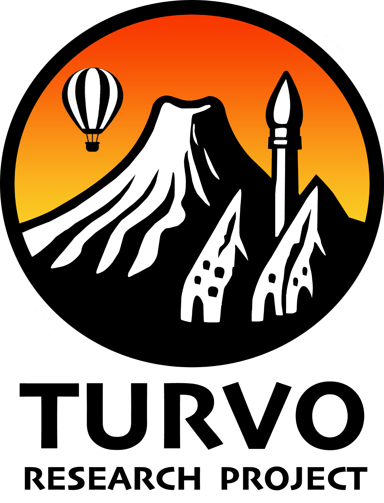
TURVOAn interdisciplinary volcanological investigation of central Turkish Anatolian active Volcanoes
Explore the projectTURVO studies the eruptive record and volcanic hazards of the most active and largest volcanic structures in the Central Anatolian Volcanic Province (CAVP). The project connects evidence from past eruptions with quantitative assessment of potential future hazards.
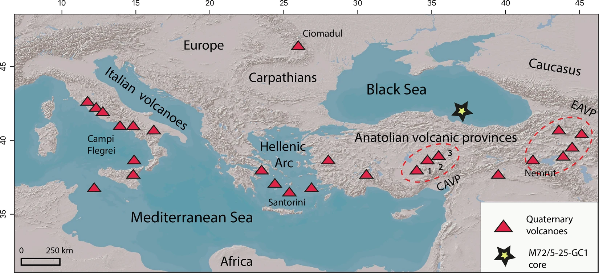
Characterize major eruptive histories, products and absolute ages.
Connect proximal deposits with distal tephra across surrounding regions.
Reconstruct past eruption dynamics through field data and numerical models.
Quantify future volcanic hazards using probabilistic approaches.
Study area
The CAVP lies within the tectonically complex Anatolian Plateau and includes stratovolcanoes, collapse calderas and monogenetic volcanoes with varied ages and eruptive histories.
Background & context
Explosive volcanic eruptions in composite volcanoes and collapse calderas involve the violent release of magma, ash and gases. Understanding the intricacies of this type of volcanism is crucial for hazard assessment and risk mitigation, given its potential to impact local and even global environments.
Objectives
TURVO focuses on advancing the understanding of explosive eruptions and their related volcanic hazards at Acigöl, Hasandağ and Erciyes. The project aims to characterize their eruptive products in order to numerically model past eruptive dynamics and quantitatively assess future volcanic hazards.
Wider relevance
TURVO is not only relevant for risk mitigation in Europe and Mediterranean countries, but also has broader implications for understanding volcanic eruptions in other composite volcanoes and collapse calderas, such as those in the Canary Islands.
Methodology
Official membership is shown separately for the Research Team and Work Team.
Principal Investigator
ORCID 0000-0002-3047-4325 ↗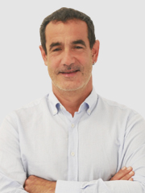
Research Team
ORCID 0000-0002-0677-6366 ↗Research Team
ORCID 0000-0002-8803-6504 ↗Research Team
ORCID 0000-0001-8889-9900 ↗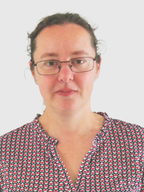
Research Team
ORCID 0000-0002-0154-1883 ↗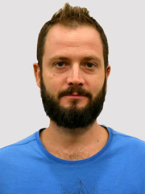
Research Team
ORCID 0000-0002-6869-1325 ↗International collaborators and PhD students
Sapienza University of Rome, Italy
ORCID 0000-0002-5106-4384 ↗GEO3BCN-CSIC, Spain
ORCID 0009-0000-1898-0113 ↗Sapienza University of Rome, Italy
ORCID 0000-0002-1838-3666 ↗Hacettepe University, Turkey
ORCID 0000-0002-9733-0633 ↗Hacettepe University, Turkey
ORCID 0000-0001-6837-3792 ↗University of Oxford, United Kingdom
ORCID 0000-0003-0878-5060 ↗CNRS, France
ORCID 0000-0001-7979-7005 ↗Hacettepe University, Turkey
ORCID 0000-0002-6343-9921 ↗Hacettepe University, Turkey
ORCID 0000-0002-9172-9926 ↗Universidad Nacional Autónoma de México, Mexico
ORCID 0000-0002-2494-9849 ↗Sapienza University of Rome, Italy
ORCID 0000-0002-1448-0282 ↗Istituto Nazionale di Geofisica e Vulcanologia, Italy
ORCID 0000-0002-4987-6471 ↗GEO3BCN-CSIC, Spain
ORCID 0000-0002-6584-4699 ↗Istituto Nazionale di Geofisica e Vulcanologia, Italy
ORCID 0000-0002-3254-2336 ↗GEO3BCN-CSIC, Spain
ORCID 0009-0008-4780-2445 ↗GEO3BCN-CSIC, Spain
ORCID 0009-0008-8591-6523 ↗TÜBİTAK MAM Polar Research Institute, Turkey
ORCID 0000-0001-8485-0093 ↗ENES Morelia, Universidad Nacional Autónoma de México, Mexico
ORCID 0000-0003-2800-0814 ↗Instituto de Geología, Universidad Nacional Autónoma de México, Mexico
ORCID 0000-0002-1997-9939 ↗Universidad Nacional Autónoma de México, Mexico
ORCID 0009-0009-6791-3705 ↗Nine coordinated work packages connect project management, field and laboratory science, modelling, data management and public engagement.
Coordination, progress monitoring and project delivery.
Mapping, stratigraphic logging and sampling across the three target volcanoes.
Geochronology and geochemical characterization of eruptive products.
Correlation of proximal deposits with distal tephra records.
Structural and subsurface-fluid investigation at Ulukışla caldera.
Integrated data management, exchange and collaborative work.
Reconstruction of eruption source parameters and plume dynamics.
Bayesian event trees, analogue volcanoes and ash-dispersal scenarios.
Scientific communication, seminars, conferences and public outreach.
Two ongoing doctoral projects focus on the eruptive behaviour and evolution of volcanic systems in Central Anatolia.
The thesis investigates the explosive eruptive behaviour of the Erciyes Volcanic Complex and assesses its potential volcanic hazard.
View official thesis profile ↗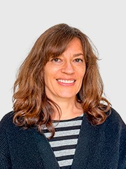
The thesis examines the eruptive history and magmatic evolution of the Acıgöl Volcanic Complex in Central Anatolia.
View official thesis profile ↗Peer-reviewed work connected to TURVO. Only published articles are listed.
The study reconstructs the ~164 ka Upper Acıgöl Tuff as a closely connected sequence: phreatomagmatic activity and a debris avalanche were followed by Plinian fallout, caldera-forming ignimbrite emplacement and post-collapse dome growth. It highlights how small intra-caldera eruptions can form an early phase of a cascading caldera event.
This open dataset reports major- and trace-element analyses of volcanic glass from 19 visible and microscopic ash layers in a southwestern Black Sea sediment core. The fingerprints link deposits to several volcanic regions and provide a reference for tephra correlation, dating and palaeoenvironmental research across the wider region.
By combining tephra found close to Erciyes with ash preserved at distant sites, this work refines the record of the volcano’s Holocene explosive activity. The resulting correlations strengthen the chronological and geochemical framework used to trace eruption deposits across the region.
Tephrostratigraphy, glass chemistry and radiometric dating identify three major rhyolitic eruptions at approximately 442, 400 and 326 ka. The ~400 ka Belbaşhanı event produced the caldera-forming deposits, while the elongated collapse structure records a strong influence from the northwest–southeast Tuz Gölü Fault Zone.
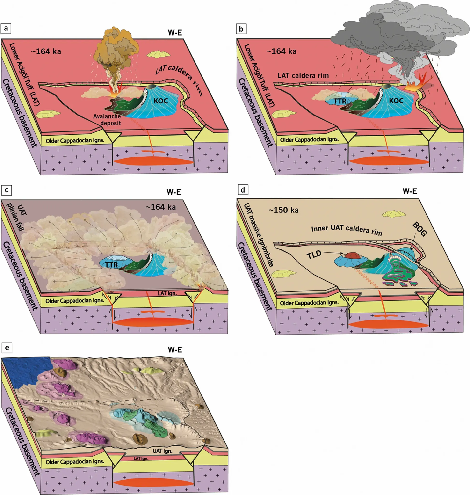
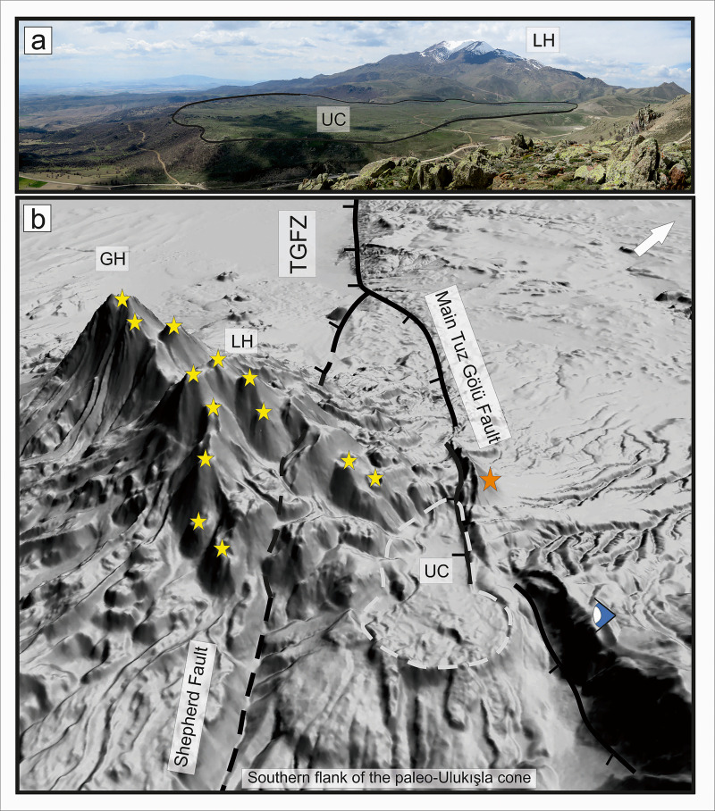
Published programme contributions and completed presentations.
Poster presentation
Poster presentation
Poster presentation
Poster presentation
Poster presentation
Established tools and data infrastructures included in the project methodology.
Atmospheric transport and tephra-deposition modelling.
Open software ↗Initial estimation of eruption and meteorological parameters.
View software manual ↗Structured identification of analogue volcanic systems.
Open software ↗Bayesian Event Tree estimates of eruption occurrence, location and size.
Open software ↗Open data
Project data products are intended for open-science repositories and specialist infrastructures, including Digital.CSIC, Zenodo, GEOROC and GeoReM, as applicable. Public TURVO repository links will be added once available.
Project news, awards and media coverage will appear here once publicly announced.
Published articles and conference presentations are listed above.
Project email, research-profile links and social-media accounts will be added when available.
View the source project pageFunding & affiliations
Grant PID2023-147255NB-I00 funded by MICIU/AEI/10.13039/501100011033 and by the European Union.
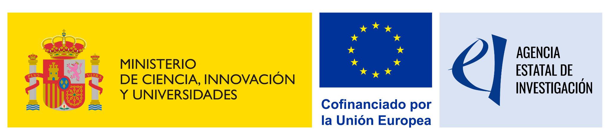
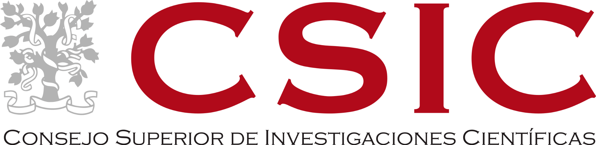
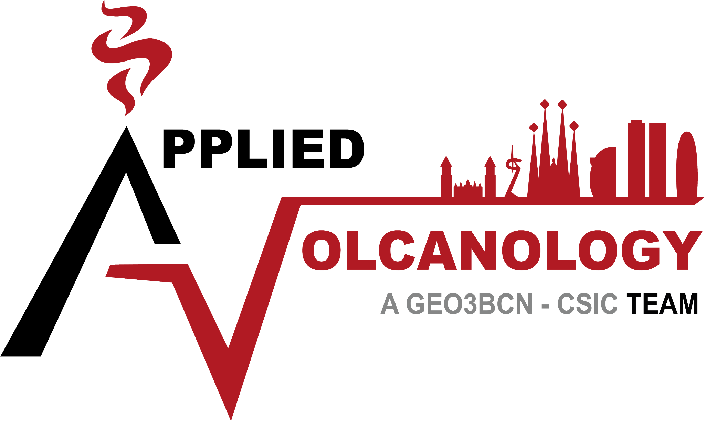